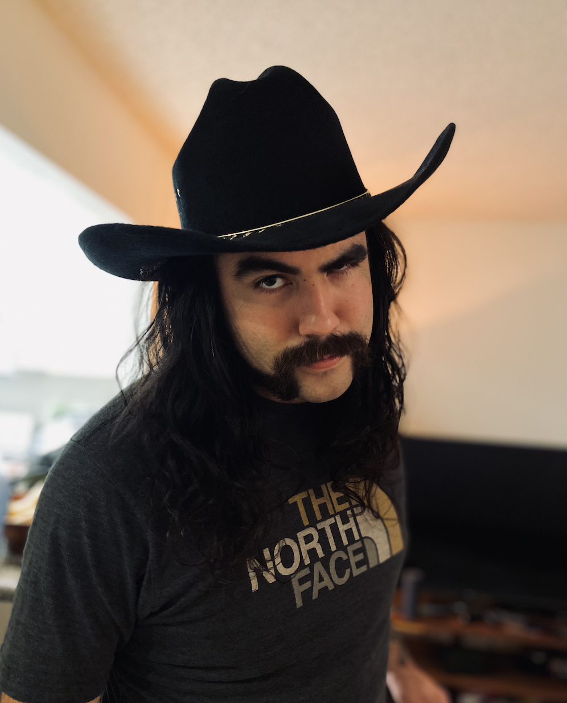

Ben Grimmius
BEN GRIMMIUS
ABOUT ME
Born in Phoenix, raised in Idaho. After high school I moved back to Phoenix to attend school at CRAS. Where I learned the art of audio engineering. After graduating I moved to Las Vegas to persue a career in live sound engineering with my friend from school. In Vegas I worked live sound and also started a band with my friend from CRAS. I started singing more often, as I was the vocalist for our death metal band Typhus.
Two years into doing live sound I decided to make the change to working with production audio. So I moved here to California and I worked in Burbank as a production audio engineer. After doing that for a year I started my employement at Apple. At Apple I was in sales, shipping investigations and operations. Working at a location with a wide range of software developers as customers, I became very interested in software developement and technologies. That is why I am making this a goal to become a software engineer and create something that will help people all over the world.
TECHNOLOGIES
MY PROJECTS

CONTACT ME
Find more of my work on GitHub